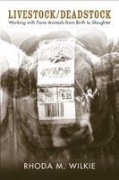

How humans think and feel about their work handling food animals
How humans think and feel about their work handling food animals


 How humans think and feel about their work handling food animals
How humans think and feel about their work handling food animals

|  |
Livestock/DeadstockWorking with Farm Animals from Birth to SlaughterRhoda M. Wilkiepaper EAN: 978-1-59213-649-0 (ISBN: 1-59213-649-4) |
Award for Distinguished Scholarship in the Animals and Society Section of the American Sociological Association, 2011
British Sociological Association's Philip Abrams Memorial Prize for the Best First and Sole-Authored Book within the discipline of Sociology, 2011
"This welcome book tackles an important and neglected topic in an interesting and insightful manner. Full of empirical detail and written in an engaging style, Livestock/Deadstock is a valuable contribution to an emerging literature focusing on agricultural knowledge practices and the complexities and ambiguities of human-animal relationships in farming."
—Lewis Holloway, University of Hull
The connection between people and companion animals has received considerable attention from scholars. In her original and provocative ethnography Livestock/Deadstock, sociologist Rhoda Wilkie asks, how do the men and women who work on farms, in livestock auction markets, and slaughterhouses, interact with—or disengage from—the animals they encounter in their jobs?
Wilkie provides a nuanced appreciation of how those men and women who breed, rear, show, fatten, market, medically treat, and slaughter livestock, make sense of their interactions with the animals that constitute the focus of their work lives. Using a sociologically informed perspective, Wilkie explores their attitudes and behaviors to explain how agricultural workers think, feel, and relate to food animals.
Livestock/Deadstock looks at both people and animals in the division of labor and shows how commercial and hobby productive contexts provide male and female handlers with varying opportunities to bond with and/or distance themselves from livestock. Exploring the experiences of stockpeople, hobby farmers, auction workers, vets and slaughterers, she offers timely insight into the multifaceted, gendered, and contradictory nature of human roles in food animal production.
Excerpt available at www.temple.edu/tempress
�We can, and should, philosophize about human-animal relations, for such relations define both us and our animal confreres. But it is in the day-to-day practice of living and working with animals (and, yes, killing animals) that those intimate relations are embodied, performed, and defined both by us and by those for whom we have a duty of care. Rhoda Wilkie�s excellent Livestock/Deadstock provides a remarkably in-depth account of the co-assembled lives of stock animals and stockpersons�where scientific and practical knowledges combine and sometimes compete, where the boredom of rationalized automated routine coexists with the vitality of individual encounters, making (as she describes) a pig sometimes so much more than just a pig. This is not a polemical book, and it is all the stronger for that. Its laudable aim is to �make sense� of those complex human-animal relations lying at the center of the agro-food industry, relations that are so often obscured either through societal acquiescence or by overly simplistic politicization. For Wilkie, livestock farming is all about working with animals, and it is in the �with� that we find the significance of both those relations and this book.�
—Henry Buller, University of Exeter
"Wilkie gradually builds the foundation for her later discussion of several paradoxes such as 'sentient commodities,' the tension between remaining aloof and having feelings about stock, and the transition from livestock to slaughtered stock.... This work will be especially useful for collections in sociology and agriculture. Summing Up: Recommended."
—CHOICE
"[A] nuanced account of the lives of those who work with livestock in Britain and the United States.... Wilkie's book is a necessary contribution to the sociological study of human-animal relations.... [She] takes great care in portraying this affective relational realm from a sociological perspective."
—Contemporary Sociology
"Wilkie takes us through a fascinating history of animal domestication.... In a multifaceted work, she examines paradoxes such as these animals being 'sentient commodities'.... It is a tribute to the author�s sociological research skills linked with a compassionate personal approach, that she is able to bring to the surface much thought and feeling that would otherwise, one assumes, never be voiced. The volume offers a unique insight into the often contradictory nature of animal production and care."
—Anthrozoos
"Livestock/Deadstock should help guide a wide group of scholars studying the relationship between producers and the nature in which they work, including in fishing, logging, and ranching.... For labor and environmental sociologists, Livestock/Deadstock is essential....[H]er study of an often overlooked group of workers has much to offer labor historians, and her anti-polemical stand is welcome for a topic that attracts overheated rhetoric from both the environmental community and the meat industry. As in so many environmental controversies, the experiences of working-class people have been lost in this debate. Wilkie has done a noble job centering those voices."
—Labor History
"Wilkie carefully undermines dichotomies not just between those who kill and those who do not, but ultimately between life and death itself. The text fits nicely among an emerging academic interest in multi-species ethnography and a renewed theoretical focus on practices of care.... This laboriously researched work is ethnographically and historically sensitive.... This is a skillful ethnography.... invaluable for academics whose research closely aligns with the questions that motivate the text."
—Journal of the Royal Anthropological Institute
Acknowledgments
1. Food Animals: More Than a "Walking Larder"?
2. Domestication to Industry: The Commercialization of Human—Livestock Relations
3. Women and Livestock: The Gendered Nature of Food-Animal Production
4. "Price Discovery": Marketing and Valuing Livestock
5. "The Good Life": Hobby Farmers and Rare Breeds of Livestock
6. Sentient Commodities: The Ambiguous Status of Livestock
7. Affinities and Aloofness: The Pragmatic Nature of Producer—Livestock Relations
8. Livestock/Deadstock: Managing the Transition from Life to Death
9. Taking Stock: Food Animals, Ambiguous Relations, and Productive Contexts
Notes
Glossary of Doric Terms
References
Index
Rhoda Wilkie is a lecturer in sociology at the University of Aberdeen, where she earned her doctorate in 2002. She is the co-editor (with David Inglis) of the five-volume collection, Animals and Society: Critical Concepts in the Social Sciences.
Animals and Society
Sociology
Labor Studies and Work
Animals, Culture, and Society, edited by Arnold Arluke and Clinton R. Sanders.
Animals, Culture, and Society, edited by Arnold Arluke and Clinton R. Sanders, is concerned with probing the complex and contradictory human-animal relationship through the publication of accessible books that consider the place of animals in our culture, our literature, our society, and our homes.
© 2015 Temple University. All Rights Reserved. This page: http://www.temple.edu/tempress/titles/1908_reg.html.